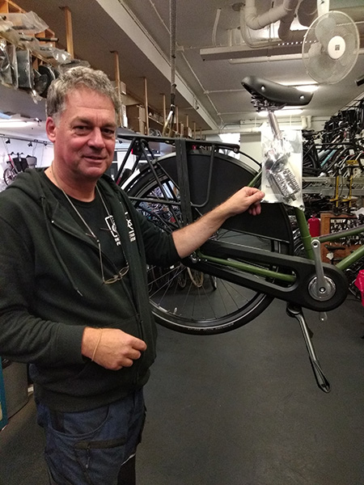

Wat deed ik zoal
Fietsenmaker
Ik was een tijdje fietsenmaker. Dat is een mooi en praktisch vak maar niets voor mij als beroep. Het is wél leuk om voor de hobby of de aardigheid aan fietsen te sleutelen. Dit is zo ongeveer de enige foto van mij als fietsenmaker.Een foto van mezelf als fietsenmaker
Fotograaf
Ik ben ook fotograaf, dat is wat ik het liefste doe.
Mijn foto's staan op www.joostbataille.nl. Die pagina opent in een nieuw venster.
Die site is gebouwd met Indexhibit, een relatief eenvoudig CMS met een strakke opmaak.